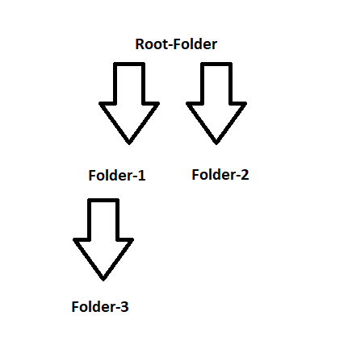

Git is a version control tool. Changes can be made to files and they can be saved as different versions of the project without affecting the existing project until the changes are ready to be reviewed and merged into the final project. GitHub is a host for repositories, allowing developers to easily collaborate over the internet. There are multiple ways you can use Git. You can use Git version control by using GitHub, or using Command Line commands in a terminal, or through other software like VSCode.
Using Git, a change can be permanently saved to the repository (project) as a commit. Commits capture the state of the project at that time, like a series of snapshots along the timeline of the project.

A branch allows a developer to independently code a new feature or modify software without affecting the main project. The commits made on a separate branch can be merged back into the main (master) branch when everything works and has been approved.
A pull request lets other people see the changes you have made on a branch and asks them to review the changes before the changes are merged into the main branch of the project.
| Command | What it does |
|---|---|
| git init | Initialises/creates a new git project/repository |
| git status | Used to check the status of the Git repository including the current commit, modified files or files not being tracked by Git |
| git add filename | Adds the files to the staging area ready to be committed, filename should be replaced with the name of your file |
| git commit -m "message" | Adds the current contents of the staging area to a new commit, message should be a description of the changes made in that commit |
| git diff filename | Shows changes between the working directory and the staging area, filename should be replaced with the name of your file |
A Unix Shell is an interface that interprets commands from a user allowing the operating system to understand and carry out the commands. It is a useful tool for file management.
On a computer, information is stored in files which are stored in directories. A directory can contain files but can also contain other subdirectories, and in turn they can also contain more files and other subdirectories. The shell command to show all the files and directories within the current directory is "ls"". Arguments can be passed through at the same time to change the behaviour of the command. For example: ls -a → shows all files and all hidden files ls -l → shows all files in long format ls -t → shows files in order of the time they were last accessed
To change directories the change directory command “cd” followed by a space and then the name of the child directory can be used to move from a parent directory to a child directory. A “/” can be used to move more than one level at a time.
Starting in Root-Folder, you can change into Folder-3 by using “cd Folder-1/Folder-3”. But what if you want to jump back up to either the Root-Folder or Folder-2? “..” can be used to take you back to the parent folder, and together with forward slashes you can travel back up multiple levels. Starting in Folder-3 the command “../..” would take you back to Root-Folder. Or starting again in Folder-3, “../../Folder-2” would move you into Folder-2.
Can’t remember what folder you are in or where you are while navigating your filesystem? No problem, just use the print working directory command “pwd” to print the path from your root directory to the current working directory.
To make a new directory inside the current directory use the make directory command “mkdir” followed by a space and the name of your new directory. It is possible to create a new directory within a different directory to the current directory by adding a path as an argument.
For example, for the above filesystem, if we were in Root-Folder we could use the command “mkdir Folder-2/Folder-4” to create a folder called Folder-4 inside Folder-2.
To create a file in the current directory use “touch” followed by a space and the name of the file you want to create. For example in the diagram below, while in the Root-Folder, the command “touch file1.txt” would create a textfile called “file1” inside the Root-Folder.
We can also make use of a path as an argument to create a file in a different directory. For example if we were in the Root-Folder we could use the command “touch Folder-1/Folder-3/file2.txt” to create a textfile called “file2” inside Folder-3.
The shell command to remove a file is “rm” followed by a space and the name of the file you want to remove. If you add the flag “-r”, the command “rm -r” will remove a directory and all of the files and directories within it.
Back to the top